Drones agrícolas · registro de campo
Tecnologia de aplicação em área rural
Fotografia enviada por Ricardo Ordone para o portfólio. O registro mostra um drone agrícola em voo sobre pastagem.
Consultar serviço com drone
Uma seleção mais profunda do acervo profissional em recuperação ambiental, Cerrado, irrigação, controle erosivo, plantio compensatório, drones e pesquisa aplicada — organizada para mostrar problema, método, execução e acompanhamento.
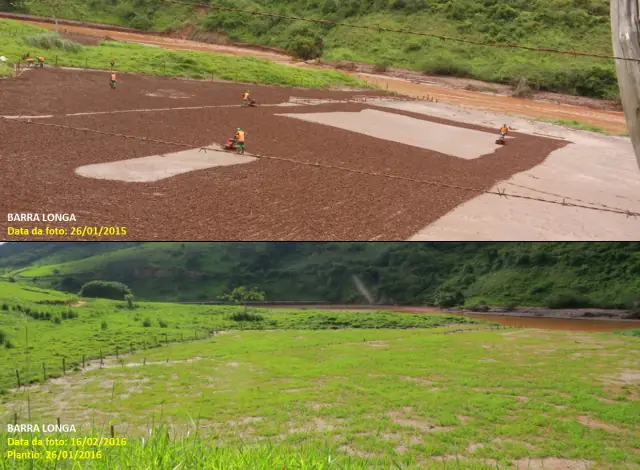
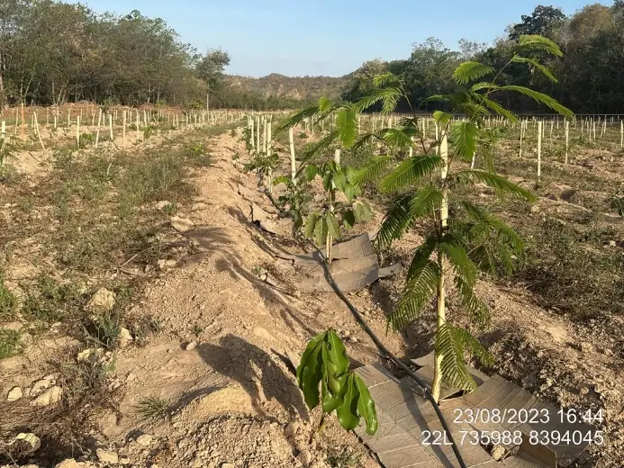
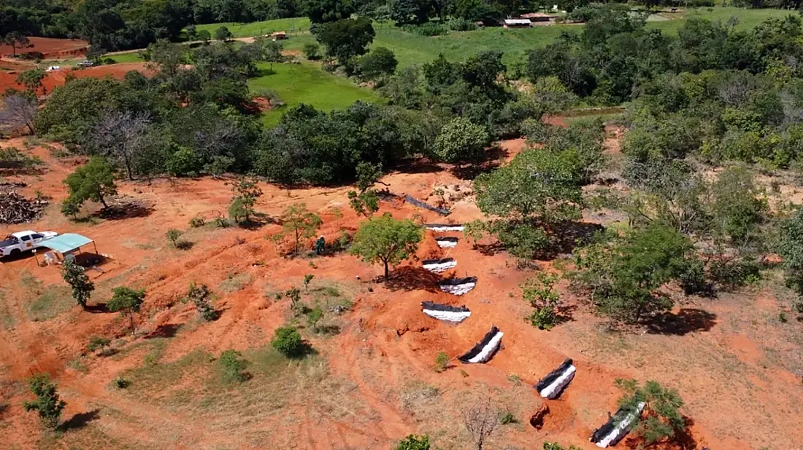
Fotografia enviada por Ricardo Ordone para o portfólio. O registro mostra um drone agrícola em voo sobre pastagem.
Consultar serviço com droneAcervo recente de execução de PRADA com sequência de preparo físico da área, conservação do solo, operação mecanizada, aplicação com drone agrícola, recebimento de mudas e organização das frentes de restauração.
Experiência técnica documentada. Os registros originais vinculam a execução ao contrato e às empresas identificadas nos relatórios de origem.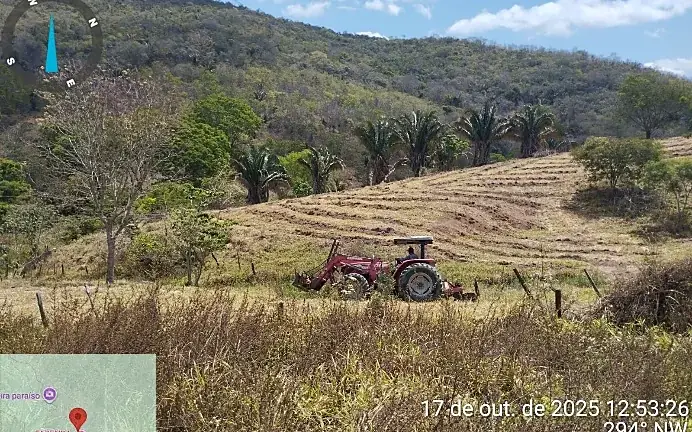
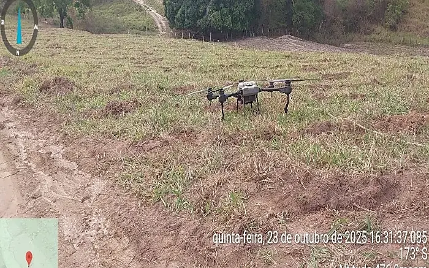
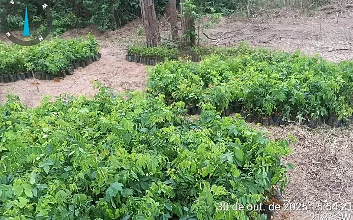
Os relatórios de 2016 documentam atuação em diferentes trechos entre Mariana e Rio Doce, com implantação emergencial de vegetação e acompanhamento da evolução das áreas afetadas pelo rompimento da Barragem de Fundão.
Fonte documental: Relatório Geral 2016 / Serviço para contenção de sedimentos por meio de vegetação. Apresentado como acervo profissional, não como contrato da Ordone Agroambiental.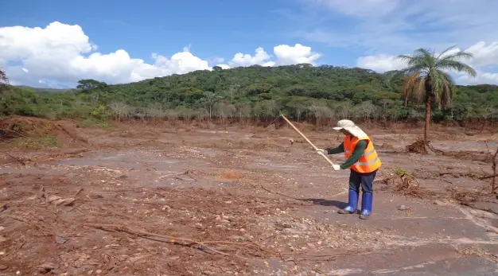
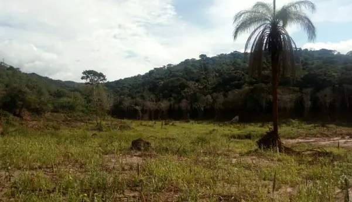
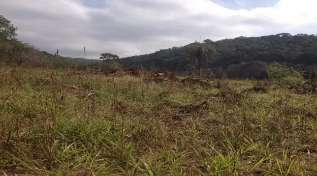
O programa de Niquelândia documenta um experimento de campo estruturado em 15 parcelas, com 5 tratamentos e 3 repetições, cada parcela com 25 × 50 m e 100 mudas. O objetivo foi comparar estratégias de proteção, nutrição e estabelecimento de espécies nativas.
Ricardo Ordone aparece no relatório como Engenheiro Agrônomo e Coordenador Técnico Executivo. Acervo profissional documentado.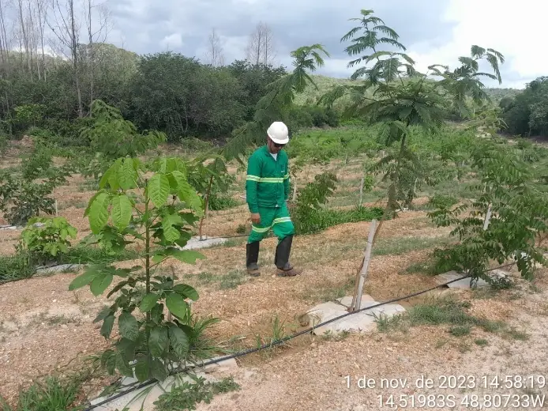
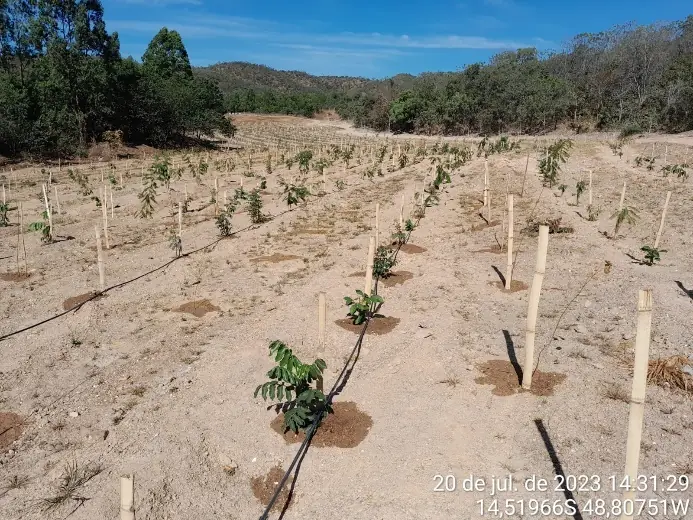
Outro eixo do mesmo programa registra manejo direcionado de indivíduos exóticos para reduzir interferência sobre regeneração natural e plantios de enriquecimento com flora nativa do Cerrado.
Fonte documental: Relatório de Cumprimento de Atividades — Manejo de Flora Exótica, maio/2024.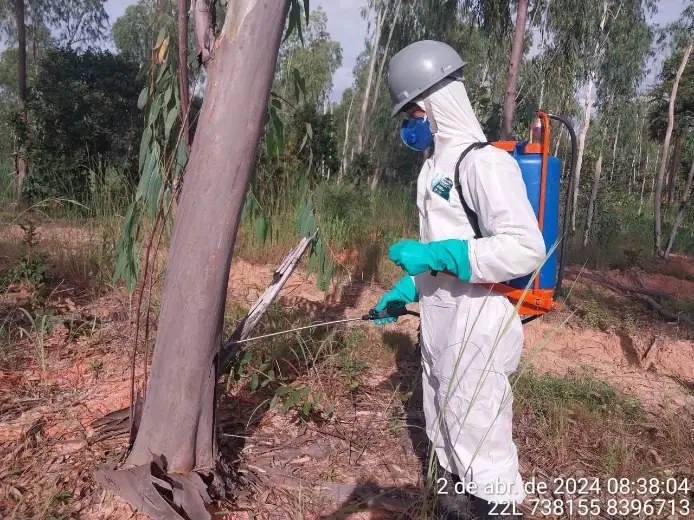
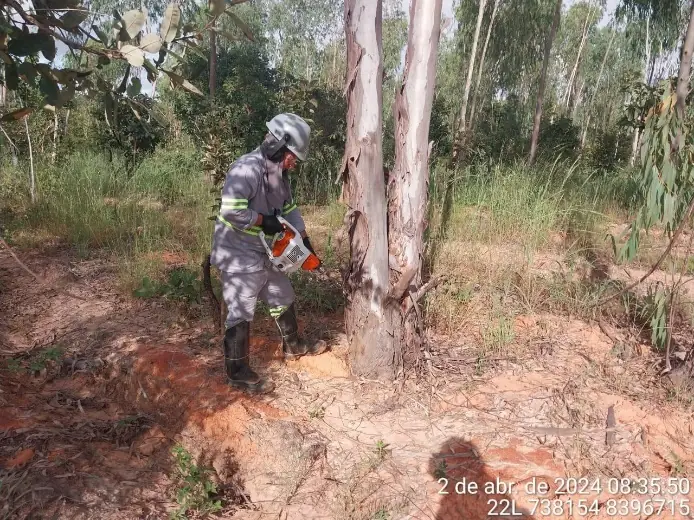
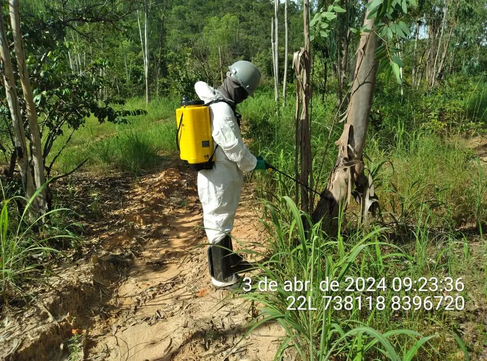
Registros técnicos mostram implantação de paliçadas em processos erosivos lineares, reaproveitamento de madeira disponível, uso de manta e estruturas auxiliares, além do acompanhamento após eventos de chuva.
Acervo profissional de obra de bioengenharia e condicionante ambiental.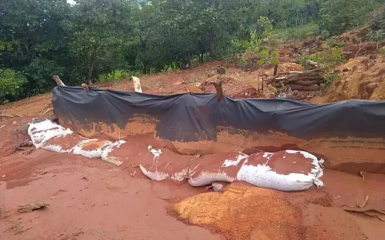
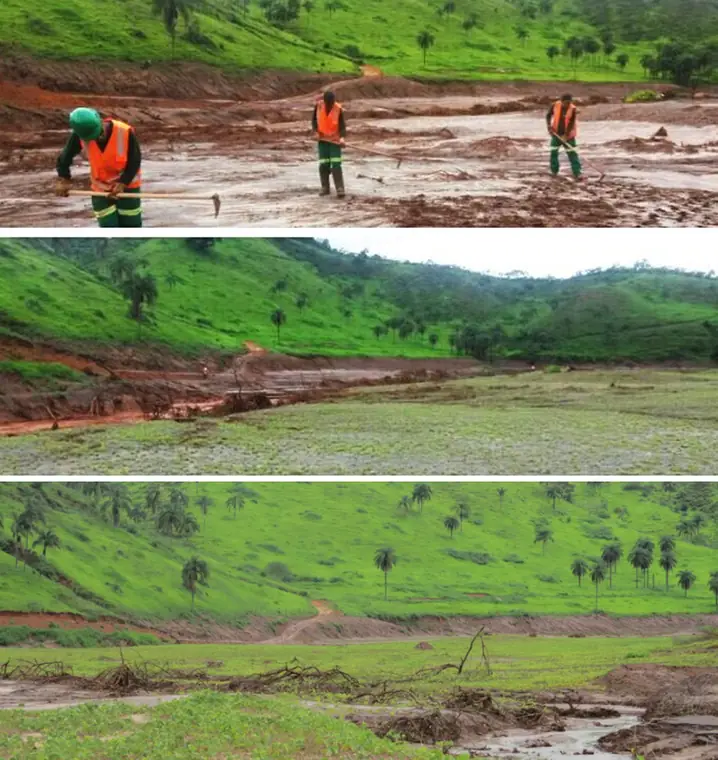
O acervo documenta assistência técnica para evolução de viveiro de espécies nativas, produção de mudas para recuperação de nascentes, APPs e áreas degradadas pela atividade mineral.
Experiência técnica documentada durante atuação profissional anterior.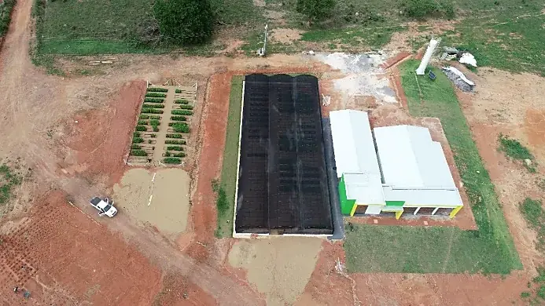
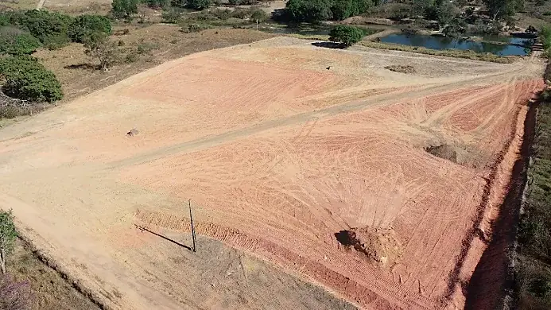
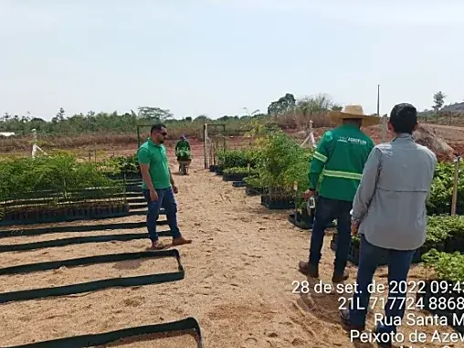
Os relatórios registram frentes de plantio e manutenção em APP e áreas de compensação, combinando manejo de vegetação, controle de formigas, coroamento, adubação, preparo de solo e acompanhamento técnico.
Os valores de correção de solo existentes no laudo pertencem ao caso analisado e não são tratados como recomendação universal.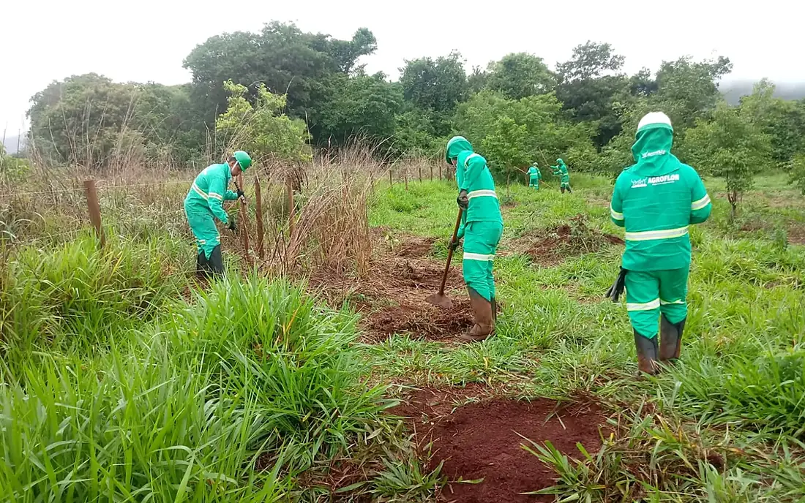
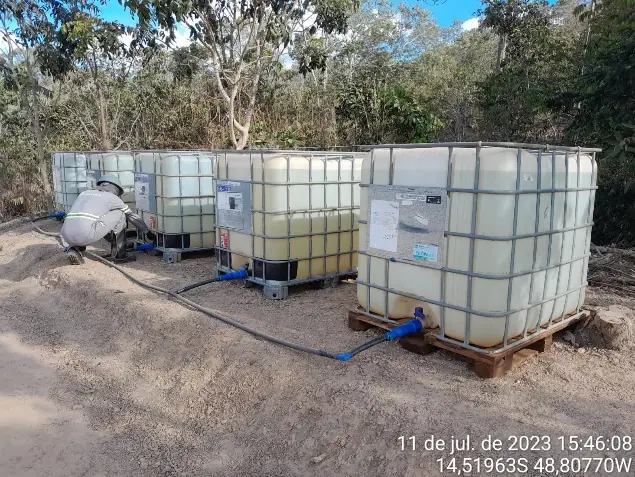
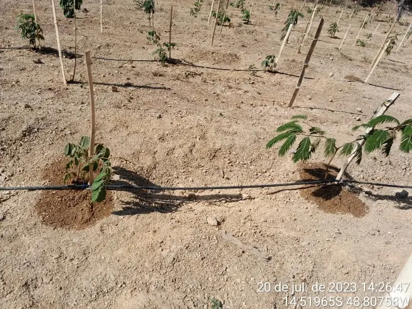
Os comparativos abaixo foram selecionados somente quando os relatórios identificam claramente a sequência temporal ou a evolução do tratamento.
O relatório identifica fotografias antes do plantio, depois do plantio e registro posterior de evolução da cobertura.
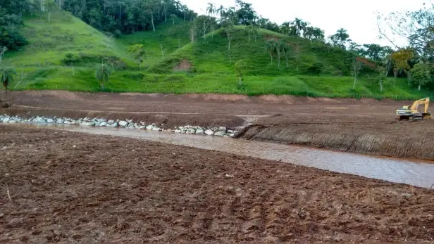
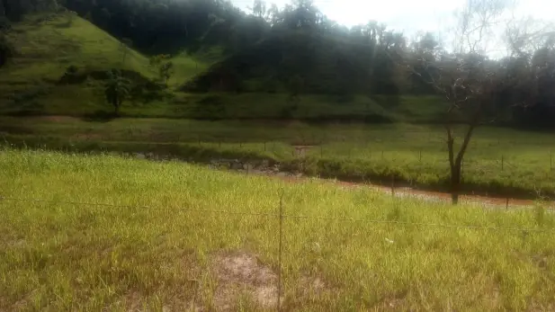
Sequência documentada com intervenção de preparo, plantio e formação de cobertura vegetal.
Composição original do relatório mostrando condição inicial e área após revegetação.
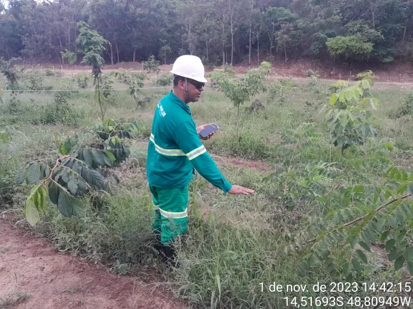
Não é um “antes e depois”, e sim comparação entre tratamentos monitorados. O relatório registra melhor resposta do papelão em vários indicadores avaliados naquela etapa.
Os materiais não ficam apenas como fotos: eles sustentam áreas de serviço que a Ordone pode transformar em diagnóstico, projeto, implantação e monitoramento.
Revegetação, plantio compensatório, recuperação de APP, enriquecimento e acompanhamento de áreas degradadas.
Paliçadas, retenção de sedimentos, drenagem, conservação do solo e controle de processos erosivos.
Dimensionamento e implantação de soluções de irrigação para mudas, viveiros e sistemas produtivos, incluindo automação quando aplicável.
Parcelas experimentais, tratamentos comparativos, monitoramento de sobrevivência, desenvolvimento e resposta de campo.
Mapeamento de áreas, registros aéreos, acompanhamento territorial e apoio à execução de campo.
Coleta, interpretação agronômica, preparo, correção, adubação e integração com o objetivo ambiental da área.
Envie localização, fotos, documentos disponíveis e o objetivo da área. A Ordone organiza a demanda desde o diagnóstico e projeto até licenciamento, execução e monitoramento técnico, conforme a necessidade do caso.
Nota de acervo: resultados quantitativos apresentados nesta página pertencem aos casos documentados e ao estágio específico de cada monitoramento. Não constituem promessa de desempenho para outros locais. Direitos, marcas, autoria e vínculos contratuais dos documentos originais permanecem com seus respectivos titulares.